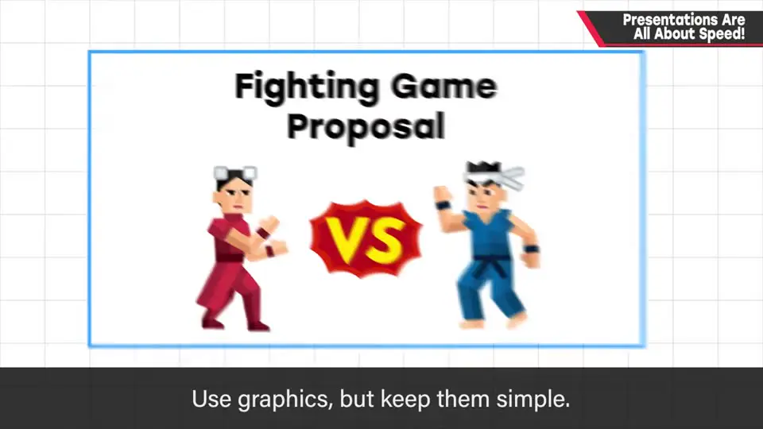
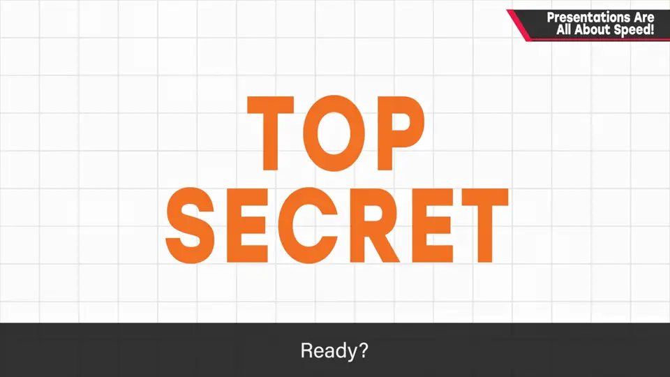
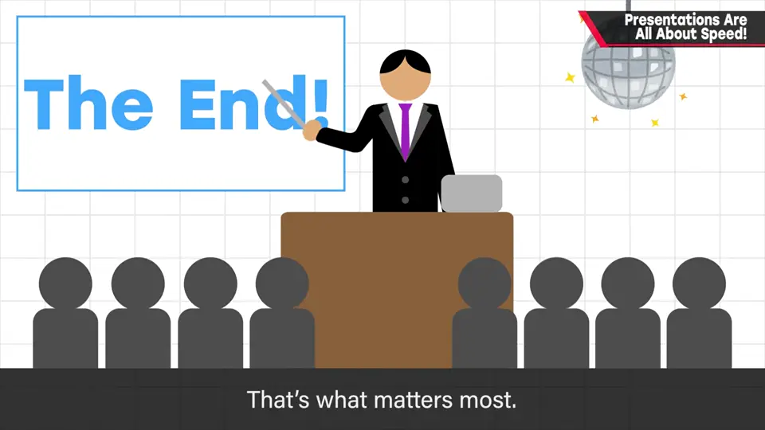
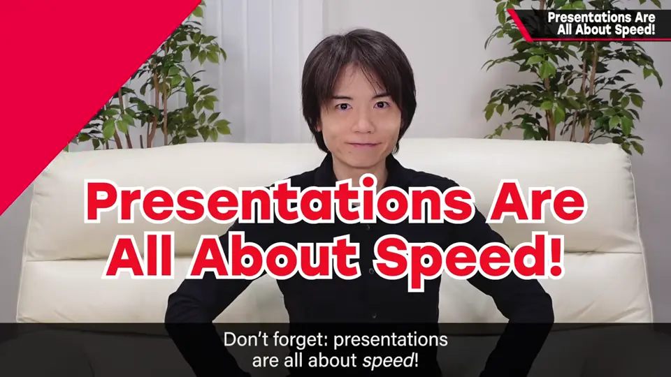

速览
团队协作做东西，一定要把想法 present 给别人。樱井的秘诀只有一条：演示就是速度。削掉赘肉，只传达必要的内容；需要配图，但要简洁；不一定要短，关键是在给定时间里讲得多密、节奏多快。他用这期本身示范：讲得短，所以印象深。
1. 演示就是速度 0:00
团队协作做东西，就一定需要把想法 present 给别人；即便不是团队，创作者向别人传达东西也很重要。樱井（自称被认为比较擅长演示）的「秘诀」只有一条：
演示就是速度。
- 削掉赘肉，只传达必要的内容。
- 不需要（冗长的）用意说明和各种附加。
- 需要配图，但要简洁。
- 不一定要「短」——关键是在给定时间里讲得多密、节奏多快。
他用这期本身示范：「我的演示到此结束。讲得短，所以印象深吧？」




自测题
1. 樱井的演示「秘诀」是什么？
演示就是速度：削掉赘肉，只传达必要的内容。 0:21
2. 演示讲究速度，是否意味着演示必须很短？
不是。不一定要短，关键是在给定时间内讲得多密、节奏多快。 0:41
3. 演示中关于配图，樱井怎么说？
需要配图，但要简洁。 0:37